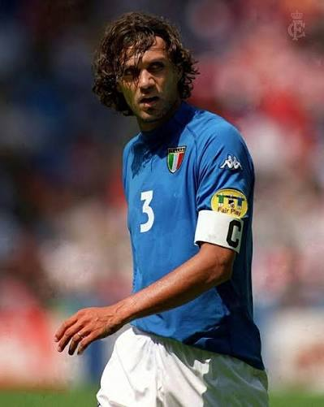

Historia de Paolo Maldini
Paolo Maldini es una leyenda del AC Milan, nacido el 26 de junio de 1968. Es considerado uno de los mejores defensas de la historia del fútbol. Maldini jugó en el AC Milan durante toda su carrera profesional, desde 1985 hasta 2009, ganando 7 Serie A y 5 Champions League. Su versatilidad, elegancia y liderazgo lo convirtieron en el capitán del equipo durante muchos años.
Maldini es recordado por su disciplina defensiva, su capacidad para leer el juego y su longevidad en el fútbol de élite. Jugó para la selección italiana en 126 ocasiones y fue parte de la selección que llegó a la final del Mundial de 1994. Su legado en el AC Milan es incomparable, siendo considerado como el mejor defensa de la historia del club italiano.
|
|
 |